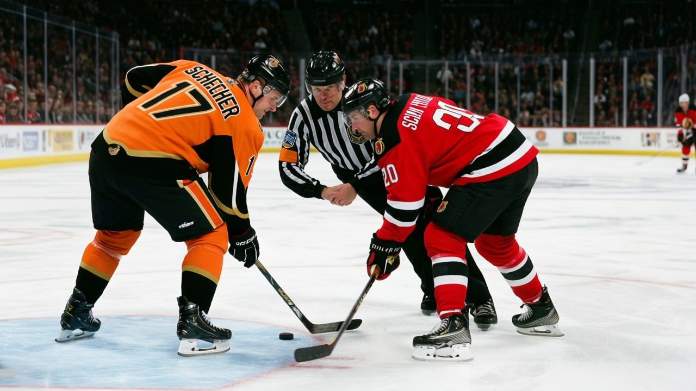

PHX
PHX NYI
NYI CGY
CGYOttawa's Room: 16 Points Between the Top and the Bottom
Three men at 74 morale play alongside teammates at 87 with the same Book grade and the same role
 Doug ReimerAnalytics editor, ex-video coach · The Slot Report
Doug ReimerAnalytics editor, ex-video coach · The Slot Report
 Ottawa Senators's club morale average is 85.8 on the Bureau's Morale Scale, the lowest mark in the league. Inside the room, the spread runs 16 points: from 90 (Todd White, Anton Volchenkov) to 74 (
Ottawa Senators's club morale average is 85.8 on the Bureau's Morale Scale, the lowest mark in the league. Inside the room, the spread runs 16 points: from 90 (Todd White, Anton Volchenkov) to 74 ( Peter Schaefer72, Vaclav Varada71,
Peter Schaefer72, Vaclav Varada71,  Bryan Smolinski74). That's the largest internal gap of any of the 30 clubs I checked.
Bryan Smolinski74). That's the largest internal gap of any of the 30 clubs I checked.
Method. I pulled every current-season line for Ottawa's active roster, joined it to the Morale Scale and the Book's overall grade, sorted by morale ascending, and compared players at similar ice-time tiers.
Same grade, same team, 13-point gap
The sharpest comparison inside Ottawa Senators puts two 72s next to each other.
| Player | Position | Overall | MPG | GP | Points | Morale |
|---|---|---|---|---|---|---|
| Shaun Van Allen | C | 72 | 21.1 | 38 | 18 | 87 |
| Peter Schaefer | LW | 72 | 11.2 | 33 | 4 | 74 |
Both are graded 72 in the Book, wear an Ottawa sweater, and are 33 or 38 games in. The difference: Van Allen gets 10 minutes more per night and scores 4x the production. Schaefer gets 11.2 mpg on a fourth line, puts up 4 points in 33 games, and reads 74 on the Scale. Van Allen reads 87.
The gap tracks the ice time, not the grade. Both men sit at the same number in the Book. The 21-minute player and the 11-minute player are 13 points apart on the Scale.
The same pattern repeats at the 71 and 74 levels. Vaclav Varada (71, 11.9 mpg, 4 points, 74 morale) plays alongside Varada's teammates who get more. Varada is earning $1.40M with no years left, watching from the 3rd wing while the 1st wing puts up points.
Bryan Smolinski (74, 11.5 mpg, 7 points in 38 games, $2.40M, 0 years, 74 morale) is the most instructive case. He's graded 74, the same as  David Legwand87 at Nashville who carries 20.6 mpg and 87 morale. Same grade, same position, nearly 10 more minutes on the other man's side, and a 13-point morale gap. Smolinski's room is 85.8 on average, and he sits 11.8 points below his own team.
David Legwand87 at Nashville who carries 20.6 mpg and 87 morale. Same grade, same position, nearly 10 more minutes on the other man's side, and a 13-point morale gap. Smolinski's room is 85.8 on average, and he sits 11.8 points below his own team.

The 25th percentile puzzle
From the club-level ice-time distribution, Ottawa's 25th percentile is 10.0 mpg. So is Tampa Bay's. So is San Jose's.
| Club | 25th pct mpg | Avg morale | Points | Record |
|---|---|---|---|---|
 Tampa Bay Lightning Tampa Bay Lightning | 10.0 | 97.6 | 53 | 21-11-3 |
 San Jose Sharks San Jose Sharks | 10.0 | 92.6 | 40 | 15-17-4 |
| Ottawa Senators | 10.0 | 85.8 | 40 | 15-16-4 |
Tampa and Ottawa both give their 4th-line man exactly 10 minutes. Tampa's room reads 97.6. Ottawa's reads 85.8. An 11.8-point spread on the same resource allocation. San Jose splits the difference at 92.6 with the same ice-time floor and a nearly identical win column.
The minutes aren't the problem. Something else in the Ottawa room is producing the league's lowest morale average. The record is 15-16-4, 3 games under .500. The record is fine. Tampa sits 6 games higher in the standings and gets 12 more points of morale from the same allocation structure.
The head coach sees it
Ron Wilson told The Tunnel's Jan Kowalczyk after San Jose Sharks's 6-4 win over Chicago that his own room had depth issues. "You look at our third and fourth lines," he said, before the interview cut off. Wilson coaches San Jose, not Ottawa, but every coach in the league talks about the 3rd and 4th lines the same way. The 3rd and 4th lines are where morale goes to die, and three Ottawa men prove it: Schaefer at 74, Varada at 74, Smolinski at 74, all locked at 11-12 mpg in rooms where the starter gets twice that.
What the mis-slot table doesn't show
The Bureau's lineup audit flags 11 mis-slots league-wide: a player rated above a top-six man at his position. None of Ottawa's bottom men appear in that table, which means Schaefer, Varada, and Smolinski aren't technically mis-slotted. They're correctly slotted on the 3rd and 4th lines. They simply hate it there.
 Martin Prusek77, Ottawa's backup goaltender, plays 52.1 mpg across 14 starts and reads 87 on the Morale Scale. The backup goalie, who sees the ice for 6 minutes a night averaged across the season, is 13 points happier than the 4th-line skater. The position matters more than the minutes.
Martin Prusek77, Ottawa's backup goaltender, plays 52.1 mpg across 14 starts and reads 87 on the Morale Scale. The backup goalie, who sees the ice for 6 minutes a night averaged across the season, is 13 points happier than the 4th-line skater. The position matters more than the minutes.
The last fact: Ottawa has 28 injury spells logged this season (the most in the league) but only 25 days lost, the fewest in the league. Less than a day per spell. The men playing 11 minutes a night aren't taking the time off.